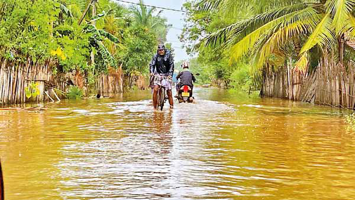
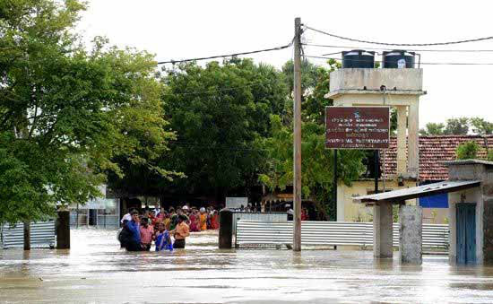

A Legacy Etched in Courage: Farewell to Dr. S. Raviraj
A Legacy Etched in Courage: Farewell to Dr. S. Raviraj
Jaffna Monitor hellojaffnamonitor@gmail.com 3 December 15, 2024 Fortnightly Edition Rs. 750 Farewell to Dr. Raviraj: The Hands That Saved Jaffna A Legacy Etched in Courage: Farewell to Dr. S. Raviraj J affna bids farewell to one of its most cherished and transformative figures, Dr. S. Raviraj, fondly called Iya by his students and colleagues. After dedicating over 40 years of unparalleled service to the people of Jaffna, Dr. Raviraj has retired, leaving behind a legacy that will inspire generations to come. At a time when the northern region of Sri Lanka was engulfed in war and despair, many professionals sought refuge in prosperous countries. Yet, Dr. Raviraj charted a different course. Armed with surgical expertise honed in Singapore and Australia, he returned to the conflict-ravaged land he called home, trading the promise of a lucrative career abroad for the modest remuneration and challenges of rebuilding a shattered medical system in Jaffna. The transformative impact of Dr. Raviraj's return to Jaffna cannot be overstated. Doctors across the region recount his visionary leadership in reorganizing and rebuilding the local healthcare system during its darkest days. His influence was profound as he inspired countless young doctors to pursue careers in surgery. As Dr. Sutharshan Vengadasalam, a fellow surgeon at the Jaffna Teaching Hospital, poignantly remarked during Dr. Raviraj's farewell, "You can call any doctor with the suffix Iya, but if you say just Iya, it means Raviraj Iya alone." Dr. Sutharshan then shared a story that perfectly illustrates Dr. Raviraj's unparalleled influence. During interviews for MD studies, a young and exceptionally qualified doctor, who could have easily pursued a specialized field like vascular surgery, opted instead for general surgery. Curious about this unusual choice, Dr. Sutharshan asked for an explanation. To his astonishment, the doctor replied, "I want to be a general surgeon like Iya." Editorial
Jaffna Monitor hellojaffnamonitor@gmail.com 4 Dr. Raviraj's career was forged in the crucible of peril, his resilience tested against the backdrop of war's savagery. Among the countless horrors he endured, one event remains etched in Jaffna's collective memory as a wound that refuses to heal—the 1987 Jaffna Hospital Massacre. Over 70 innocent lives were extinguished in cold blood by the Indian Peace Keeping Forces (IPKF), their heinous actions sparing neither renowned doctors nor the defenseless. Miraculously, Dr. Raviraj survived that harrowing ordeal, bearing witness to a chapter so dark it defies comprehension. And yet, decades later, India—a nation draped in the sanctimonious cloak of Gandhian values—has neither apologized nor acknowledged its complicity in this atrocity. No gestures of remorse, no acts of contrition. Not even a whisper of accountability for the unspeakable carnage unleashed on a hospital. Dr. Sivapathasundaram, a highly respected Consultant Paediatrician renowned for his unwavering dedication to saving lives—including one within my own family—was among the many who met a tragic and brutal end at the hands of the Indian Peace Keeping Force during that horrific carnage. He was last seen in the hospital corridors, walking alongside three nurses, their hands raised in surrender as they pleaded, "We are innocent doctors and nurses. Please don't kill us." Despite their desperate appeals for mercy, Dr. Sivapathasundaram was executed in cold blood while the nurses sustained severe injuries at the hands of a force claiming to be peacekeepers The carnage reached its vile crescendo when a courageous lady doctor, the daughter of a prominent journalist, dared to confront an Indian Army officer in one of the hospital wards. She laid bare the horrifying reality unfolding around them, appealing to a shred of humanity in a force that had long forsaken it. It was only then, under the weight of her brave defiance, that the massacre was reluctantly subdued. What followed was even more grotesque: all the bodies of those murdered by the IPKF— patients, doctors, nurses—were unceremoniously gathered and burned. Not a shred of dignity, not a semblance of last rites, was afforded to the victims. Apologists for this atrocity may argue that the LTTE fired upon the IPKF, triggering the massacre. Enough of these justifications. From its inception, the LTTE has operated under a leadership with no regard for sanctity—neither of life nor of public spaces. For Prabhakaran, every inch towards Tamil Eelam was worth any sacrifice, civilian or otherwise. But how does that justify the conduct of an army representing a nation that prides itself on the legacy of non-violence? How does a force
Jaffna Monitor
hellojaffnamonitor@gmail.com
5
For Donations:
Full Name
: JAFFNA MONITOR PUBLICATIONS
Bank Name
: National Development Bank PLC
Branch Name and Address : No.30, KKS Road, Chunnakam, Jaffna
Account Number
: 111000221437
SWIFT Code
: NDBSLKLX
Bank Address
: No.40, Nawam Mawatha, Colombo 2
Need more information?
Call or WhatsApp us at
: +94715418220
Email us at
: hellojaffnamonitor@gmail.com
supposedly driven by Gandhian ideals
descend to such barbarity, staining its
soul with innocent blood?
In private conversations with doctors
who endured that harrowing chapter,
a brutal truth surfaces: India cannot
expunge the indelible stains of its past
through silence. If it seeks absolution,
it must act—not with perfunctory
gestures but with acts of restitution
commensurate with the enormity of
its culpability. A meaningful initiative
could be the construction of a state-
of-the-art 12-story clinical ward
complex for the Jaffna Teaching
Hospital, an ambitious project
estimated at 1.7 billion Sri Lankan
rupees.
While incapable of restoring the
irreplaceable lives annihilated, such
an endeavor could serve as a catalyst
for reconciliation and a step towards
assuaging the collective wounds.
In the absence of tangible action,
India's muteness remains a piercing
indictment of its moral dereliction.
As we bid farewell to a towering
figure like Dr. Raviraj, let us not only
honor his legacy but also strive for
a future where compassion triumphs
over conflict and healing becomes the
foundation of reconciliation.
fzpad; G+q;Fd;wd;
Kaniyan Pungundran
Editor-Jaffna Monitor
Jaffna Monitor hellojaffnamonitor@gmail.com 6 Leptospirosis Identified as Cause of Fatal Fever in Jaffna T he fever outbreak in Jaffna, which has claimed seven lives to date, has been identified as Leptospirosis, commonly referred to as Rat Fever, according to the Epidemiology Unit of the Ministry of Health. The victims, aged between 20 and 65, reportedly suffered from severe fever and respiratory complications. Blood samples sent to Colombo for detailed examination confirmed the presence of Leptospira bacteria. Addressing the media, Jaffna Hospital Director Dr. Sathyamoorthy emphasized the importance of prompt medical intervention for individuals exhibiting symptoms such as high fever, muscle pain, and difficulty breathing. He reassured the public that hospital authorities are taking all necessary steps to manage and contain the outbreak. BY: Our Reporter Jaffna

Jaffna Monitor hellojaffnamonitor@gmail.com 7 Leptospirosis, a bacterial infection transmitted through water contaminated with the urine of infected animals, often peaks during the rainy season. The Ministry of Health urges the public to take preventive measures, including avoiding stagnant water, maintaining proper hygiene, and seeking medical advice if symptoms appear. Meanwhile, the Health Promotion Bureau has launched an investigation into the circumstances surrounding the disease's spread. Dr. Kumudu Weerakoon from the Epidemiology Unit stated that authorities are closely monitoring the situation and implementing preventive measures to limit further infections. A team of medical specialists from the Epidemiology Division of the Ministry of Health in Colombo visited Jaffna on December 12 to assess ground conditions. They conducted investigative activities and provided guidance on managing the outbreak. The team, led by Dr. Praba Abeykoon, first visited the Jaffna Teaching Hospital, where they examined patients admitted to the emergency unit with fever symptoms and conducted on-site investigations. They also held discussions with Dr. T. Sathiyamoorthy, Director of the Jaffna Teaching Hospital, and Dr. T. Peranandarajah, who is a General Physician, to comprehensively evaluate the current situation. Additionally, the specialists visited the Point Pedro Base Hospital, which has admitted many patients with Leptospirosis, to assess the conditions there. During their visit, they engaged with the hospital's medical officers, examined patients receiving treatment, and provided expert advice. The team also conducted field visits to areas where infections have been reported to gather further insights and conduct in-depth investigations. Raveendran, the son of a leptospirosis victim, told Jaffna Monitor: "After the floods
